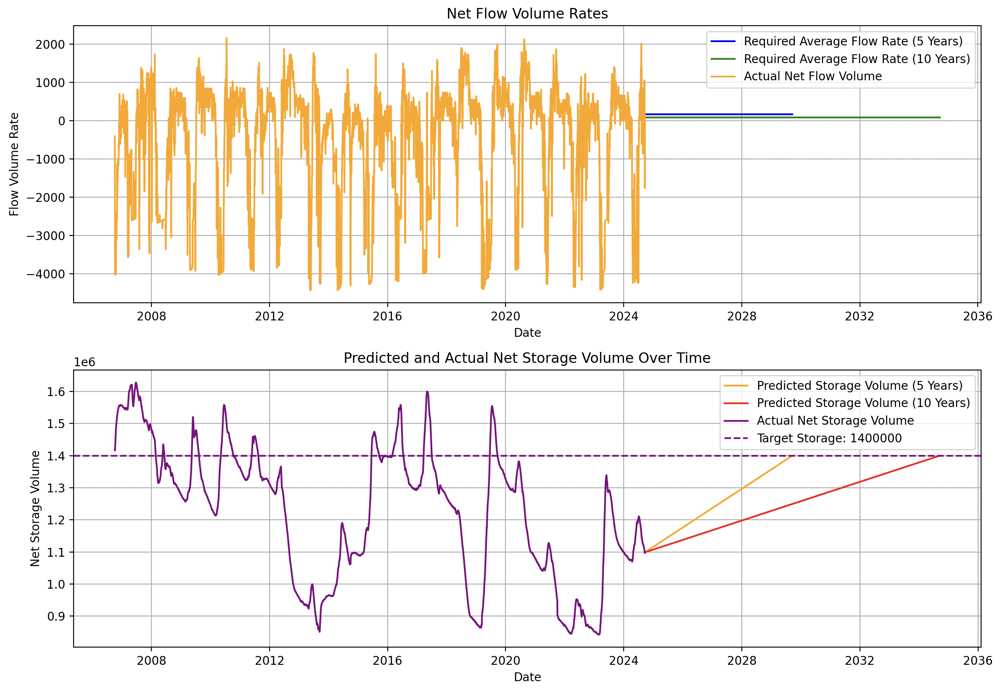

Here, you can see the predictions made by our model:
How is this acheievable
To ensure sustainable water resources for future generations in the Navajo region, several water-saving practices can be adopted. These include implementing efficient irrigation systems for agriculture, using drip irrigation to minimize water waste, and encouraging rainwater harvesting for local use. Upgrading infrastructure to reduce water leakage and improving water storage capabilities are also essential. Public education on water conservation, along with community-led initiatives, can further enhance water-saving efforts. By combining modern technology with traditional knowledge, the Navajo Nation can build a more resilient and sustainable water future.
How the Model Works
The model leverages historical water data, including storage, inflow, and release volumes, to predict future trends. Through linear regression, the model forecasts when water storage levels may reach critically low points, if sustainability measures are not implemented. By analyzing patterns over the past 60 years, the predictions help guide future decisions regarding water management for the Navajo Nation.